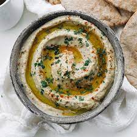

Babaganoush

Behind Babaganoush
Babaganoush, also known as Mutabbal, is an appetizer across the Middle East. It serves as part of a mezze or with pita/any bread source as an appetizer or snack.
In our family, Babaganoush holds a special place as a beloved dish, bringing us the comforting embrace of authentic home-cooked food that connects us to our Iranian roots and culture.
During Ramadan, this dip becomes the star of our table, a cherished favorite as we break our fast with warm pita and indulge in spoonfuls of Babaganoush.
Yet, beyond the holy month, this dish remains a perfect go-to snack, easy to prepare, wholesome, and utterly addictive.
With every creamy bite, we savor the flavors that have been passed down through generations, a testament to the enduring love and appreciation for our culinary heritage.
Ingredients
While this dish is Middle Eastern, you can find everything you need in almost any grocery store near you. Being a dip, the ingrediant list is short, needed just a few key ingrediants.
- 1 eggplant
- 1 lemon, squeezed
- 2 Tbsp tahini
- 2 Tbsp plan nonfat yogurt
- 2 large garlic cloves, minced
- Salt, to taste
- Black pepper, sumac, and paprika for decoration
- Olive oil
Steps
- Rost the eggplans by stove, oven, or grill. (The best is on the grill for smoky flavor).
- Once the eggplants are well-cooked, spoon out the inner part of the eggplant, and put it in a strainer to get rid of excess water.
- Add the spooned eggplant to a large bowl.
- Add lemon juice, tahini, yogurt, garlic, and salt.
- Mix by hand (Baba doesn't use utensils).
- Once well mixed, pour the dip on a flat plate.
- Decorate the dish with black pepper, sumac, and paprika.
- Using a small spoon, carve an indented path along the dish, commonly a circle/oval around the outer circumference of the dip. Or, place a circular indentation in the middle of the dip.
- Pour olive oil in the weld you created.
- Let the dish rest in the refridgerater for at least 1-2 hours to let the dip cool and enhance the flavours.
- Enjoy with pita bread, pita chips, veggies, with a dish, or on its own!